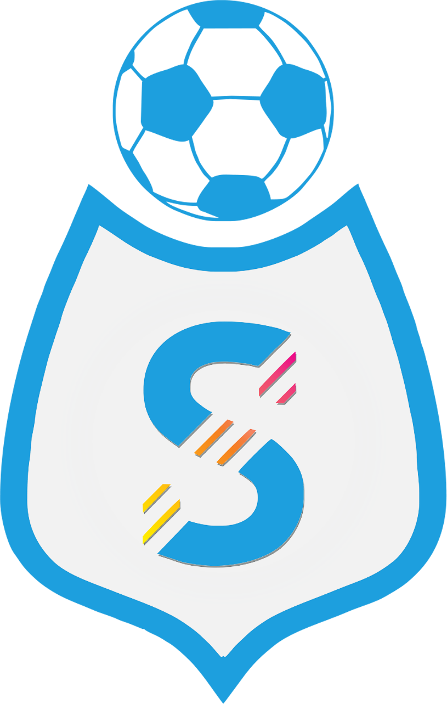

Informativa privacy — Seles Publisher
A.S.D. Seles Gioiosa Ionica · ultimo aggiornamento: 30 settembre 2026
Che cos'è Seles Publisher
Seles Publisher è uno strumento interno dell'A.S.D. Seles Gioiosa Ionica, usato esclusivamente dalla società per pubblicare i propri contenuti (locandine, risultati, comunicazioni) sulla propria Pagina Facebook e sul proprio account Instagram @asdseles. Non è un'app aperta al pubblico: nessun utente esterno vi accede né vi effettua il login.
Quali dati tratta
L'app non raccoglie dati personali degli utenti di Facebook o Instagram: non legge profili, messaggi, commenti, elenchi di follower o altre informazioni di terzi.
Per funzionare usa unicamente il token di accesso della Pagina della società, concesso dall'amministratore della Pagina e conservato in modo riservato. Il token serve solo a pubblicare contenuti della società e a leggerne lo stato di pubblicazione.
Condivisione e conservazione
Nessun dato viene venduto, ceduto o condiviso con terzi. Le immagini pubblicate sono materiale della società destinato comunque alla pubblicazione.
Cancellazione dei dati
Poiché l'app non conserva dati personali di utenti terzi, non ci sono dati da cancellare che ti riguardino. Se in ogni caso vuoi una conferma o una cancellazione:
- scrivici un messaggio alla Pagina Facebook ASD Seles o su Instagram @asdseles, indicando la richiesta: rispondiamo entro 30 giorni;
- per revocare l'accesso dell'app alla Pagina, l'amministratore può rimuoverla da Facebook → Impostazioni → Integrazioni aziendali: il token smette di funzionare immediatamente.
Titolare
A.S.D. Seles Gioiosa Ionica — Gioiosa Ionica (RC). Contatti: Pagina Facebook ASD Seles, Instagram @asdseles.